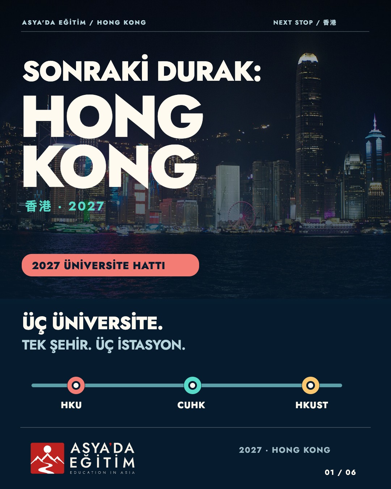
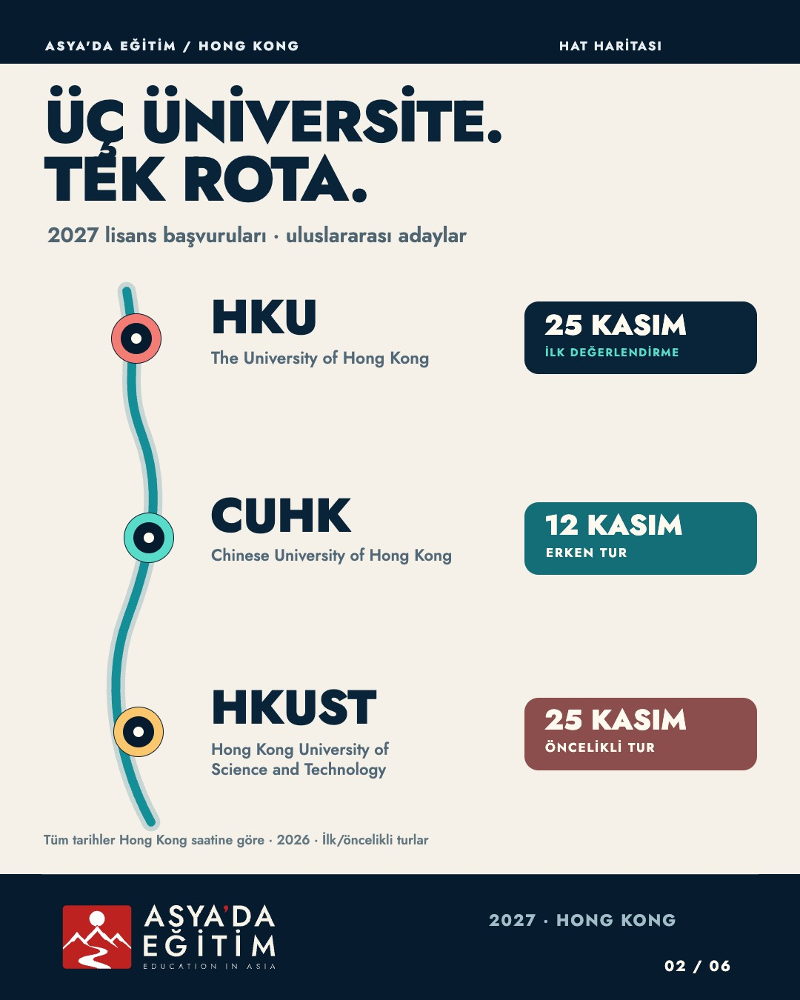
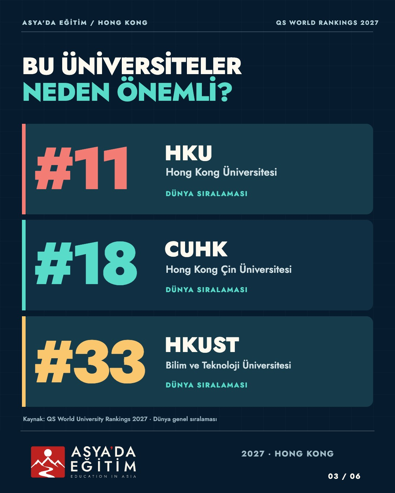
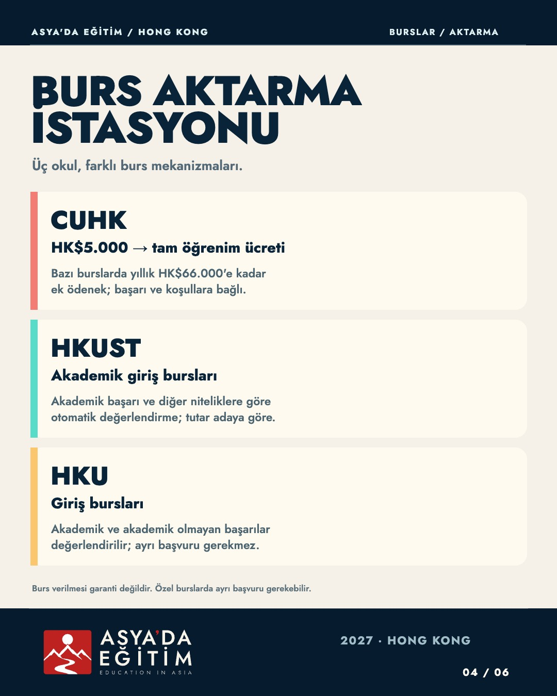
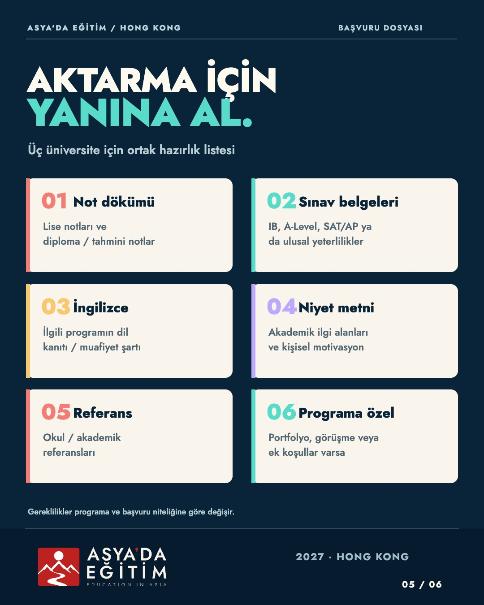
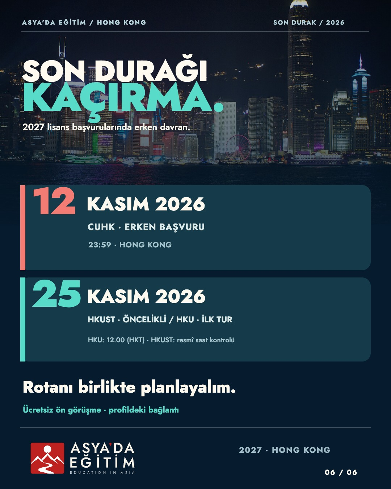

BRANDSTUDIO · ASYA'DA EĞİTİM · HONG KONG / 2027
Sonraki Durak: Hong Kong
İNCELEME TASLAĞI · V1 · 6 SLAYT · 1080 × 1350
2027 Üniversite Hattı. HKU, CUHK ve HKUST için metro istasyonlarından ilham alan özgün bir editoryal bilgi tasarımı. Tarihler, burslar ve QS sıralamaları resmî kaynaklarla kontrol edildi; metin, hat şeması ve marka imzası SVG/HTML katmanlarında korunuyor.





İnceleme ve üretim belgeleri
Üretim manifesti · Bilgi ve kaynak denetimi · Görsel kaynakları · Instagram metni
Bu karusel henüz sosyal medya hesaplarında yayımlanmadı. Gerçek MTR hattı değildir; ulaşım grafiği kavramsaldır. Üniversitelerle kurumsal bağlantı/ortaklık ima edilmez.